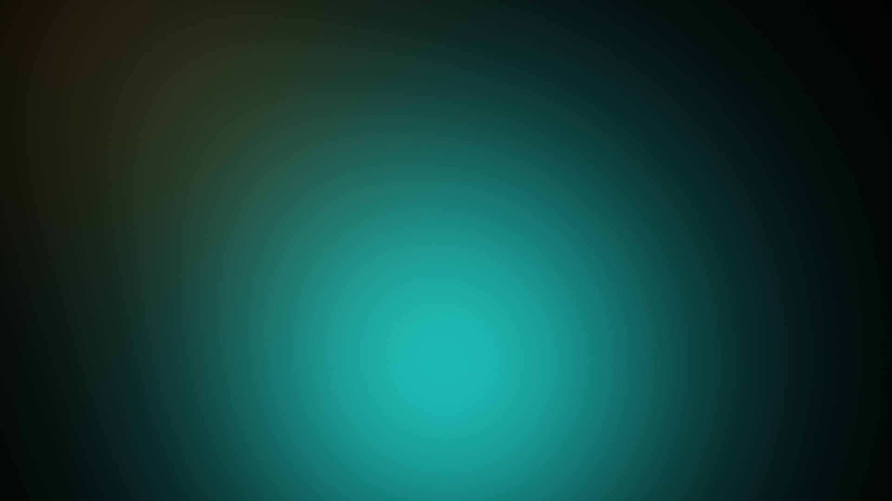

Helix Film 01 · Generated, not photographed
Descent
Forty-nine seconds. One unbroken camera move — down through dawn light and waist-high grass, under the moss, and out into a cavern that lights itself.
Scroll to run the filmDescent — scroll-driven film

The film
Four clips, one take
The camera never cuts. Each clip hands its final frame to the next, so the light, the motion and the lens stay continuous across all forty-nine seconds.
-
01
The Forest
Dawn in an untouched old-growth forest. The camera starts wide, low and slow, drifting forward just above the forest floor. Volumetric god rays through light mist, pollen drifting in the beams, grass and wildflowers swaying, dew on every blade. It descends into the grass line.
00:12 -
02
Into the Grass
Macro scale. The camera glides forward and down between giant blades that tower overhead like columns. Dew droplets hold real reflections of the sky; one rolls slowly down a blade. Insects and spores drift through shafts of light. The ground opens into a dark, mossy gap in the earth.
00:12 -
03
Threshold
The camera moves through a narrow mossy opening between roots and stone. Warm sunlight behind us fades as the lens enters shadow, then faint turquoise light appears ahead. Bioluminescent moss, spores rising, crystals in the walls lighting one after another as the camera passes.
00:10 -
04
The Reveal
The camera glides out of the tunnel and rises into an immense, luminous cavern. Towering rock, translucent crystal glowing cyan and emerald, bioluminescent flowers opening in clusters, an underground waterfall spilling into crystal-clear water. The camera pulls back and tilts up to reveal the scale of it. Awe, not fright.
00:15
The pipeline
One look, four renders, no cuts
Helix is not a renderer. It is an Anthropic-compatible gateway and an MCP server that drives video and image generation models on your behalf. The film you just scrolled was made by calling those tools with a prompt stack and a chain of references.
-
01
Direct
One master style block is prepended to every clip prompt: anamorphic macro lens, 24fps filmic motion blur, physically accurate light, real dew refraction, no morphing, no warping, no CGI sheen. The block is the film; the clips are just its sentences.
-
02
Chain
Each clip ends where the next begins. The final frame of clip n is passed as a reference to clip n+1, so the camera never cuts and the exposure never jumps.
-
03
Render
The MCP server estimates the cost before the render starts and states that the output is AI-generated. Then it spends real credits at Higgsfield and waits on the job.
-
04
Publish
Media is passed through byte-for-byte. Helix never transcodes, re-muxes, crops or re-encodes upstream media, because that would destroy SynthID and C2PA manifests.
-
05
Scrub
This page is a scrubber, not a player. Scroll position maps linearly onto the film’s timeline; the video element’s
currentTimeis rewritten on every frame. -
06
Be honest
Every frame of this film was generated by a machine. It is not a photograph, it is not a render of a real place, and it does not depict anything that exists.
{
"tool": "generate_video",
"arguments": {
"model": "higgsfield/seedance/2.5",
"duration": 12,
"resolution": "1080p",
"prompt": "<master style block> Continue from the previous frame. Macro scale: …",
"reference_videos": ["https://…/clip-01.mp4"]
}
}
The four clips were concatenated with ffmpeg and re-encoded with
-g 1 so every frame is a keyframe. That is the only step that makes
scroll-scrubbing frame-accurate — and it is a step Helix deliberately does not do for you.
The catalog
What the pipeline can reach
Helix speaks to generation endpoints, not to one house. Prices are USD per unit as published on the provider’s site and are indicative only — Helix shows an estimate, never a guarantee.
| Endpoint | Provider | Kind | Duration | Resolution | Price |
|---|---|---|---|---|---|
higgsfield/cinema-studio/4.0 | Higgsfield | Video | 4–30 s | 480p · 720p | $0.07 / s |
higgsfield/seedance/2.5 | ByteDance | Video | 3–30 s | 720p · 1080p | $0.144 / s |
higgsfield/kling/4.0 | Kuaishou | Video | 3–30 s | 720p · 1080p | $0.066 / s |
higgsfield/kling/4.0/flash | Kuaishou | Video | 3–20 s | 720p | $0.047 / s |
higgsfield/veo/3.1 | Video | 4–8 s | 720p · 1080p | $0.20 / s | |
higgsfield/wan/3.0 | Alibaba | Video | 3–30 s | 480p · 720p · 1080p | $0.025 / s |
higgsfield/wan/3.0/prime | Alibaba | Video | 3–30 s | 480p · 720p · 1080p | $0.041 / s |
higgsfield/soul/v2/standard | Higgsfield | Image | — | — | $0.002 / img |
higgsfield/nano-banana/pro | Image | — | — | $0.02 / img | |
higgsfield/flux/2/pro | Black Forest Labs | Image | — | — | $0.01 / img |
higgsfield/seedream/5/pro | ByteDance | Image | — | — | $0.01 / img |
higgsfield/gpt-image/2.6 | OpenAI | Image | — | — | $0.02 / img |
Forty-nine seconds of Seedance 2.5 costs roughly $7.06. The same forty-nine seconds on Veo 3.1 would be about $9.80 — and Veo tops out at eight seconds per call, so it could not have produced this film in four calls at all. Helix never claims unlimited media generation: media spend is metered against a USD budget.
Credits
The cut
Clips
- 01 The Forest 00:12
- 02 Into the Grass 00:12
- 03 Threshold 00:10
- 04 The Reveal 00:15
Total running time 00:49
Rendered with Seedance 2.5 · 1080p · 16:9 · 24 fps
Audio direction
Wind and birdsong above ground, fading into deep reverb as the camera passes the threshold. Dripping water and a soft low synth pad in the cave, with the waterfall roar swelling at the reveal. The score is written to sit under the image, never on top of it.
The look
Photorealistic nature cinematography, shot on a cinema camera with an anamorphic macro lens. One single continuous unbroken camera move, no cuts, no text, no people, no logos, no UI. Physically accurate light, real dew refraction, subsurface scattering in leaves, shallow depth of field with natural focus pulls, subtle handheld micro-motion, 24fps filmic motion blur. Forest palette: deep greens, earthy browns, soft gold sunlight, restrained highlights. Cave palette: turquoise, emerald, cyan crystal light against dark warm stone. No morphing, no warping, no flickering, no cartoon or CGI look.
Disclosure. Descent is AI-generated. It contains no photography, no filmed sets, no human subjects and no real location. The models that produced it are commercial generation endpoints operated by third parties; the credits above describe the art direction, not the provenance of any single frame. Helix identifies the serving backend for every request and never presents generated media as anything other than generated media.